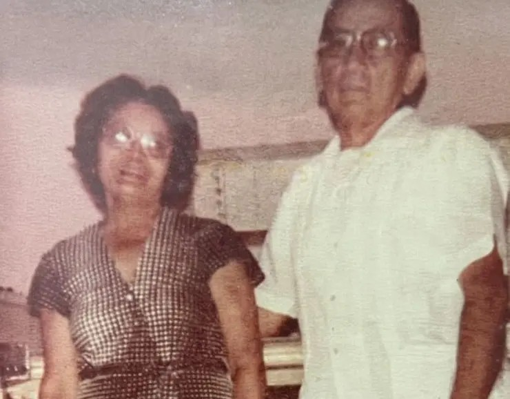
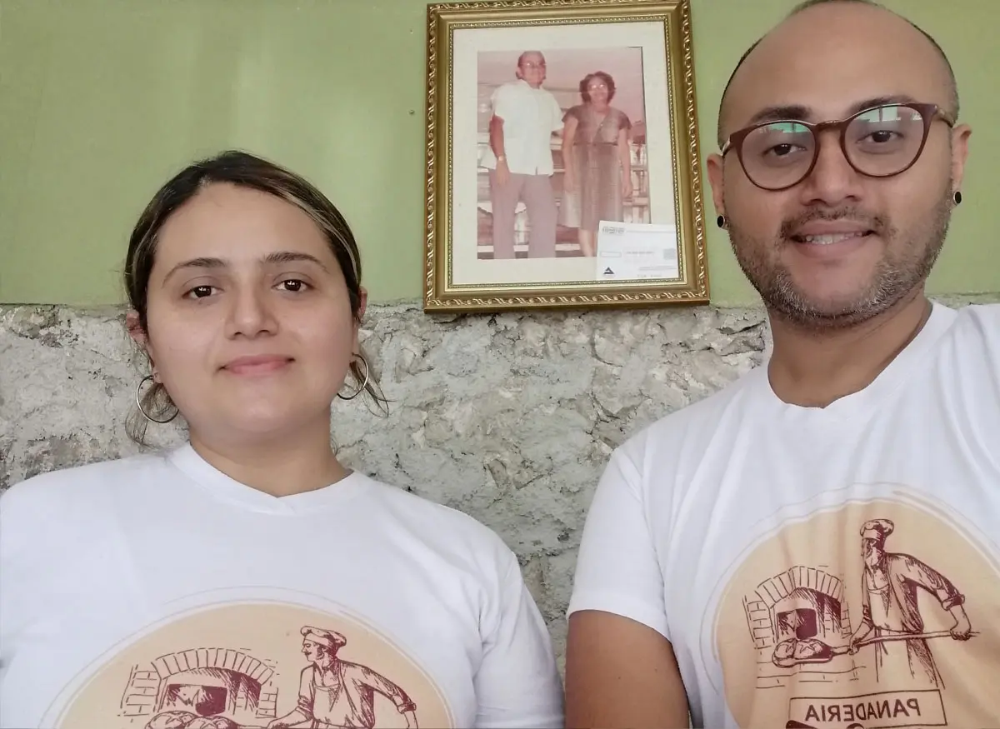

Nuestra historia
Desde 1953, el empresario Javier Herrera y su esposa, la señora Ramona Baeza, comenzaron a operar la exitosa Panadería “Santa Teresita”, establecimiento que pronto se convirtió en un referente de la comunidad. Desde sus primeros días, la panadería se ha destacado por mantener recetas tradicionales, un proceso artesanal y un profundo compromiso con la calidad. Esta empresa 100% yucateca ha sido, desde sus inicios, un símbolo de trabajo arduo, dedicación y valores.

Hoy, 72 años después de su fundación, Jocabet Herrera y Gerardo Herrera Jr., nietos del señor Javier y la señora Ramona, continúan con orgullo el legado que sus abuelos iniciaron, manteniendo su compromiso de preservar el sabor único e inigualable del tradicional pan horneado a la leña. Con dedicación y respeto por las recetas originales, han honrado la tradición familiar, asegurando que la esencia, la calidad y la calidez que siempre han caracterizado a la panadería sigan presentes en cada producto que ofrecen a sus clientes.